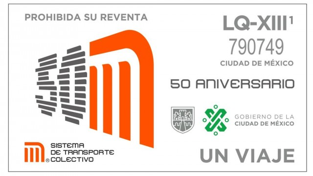
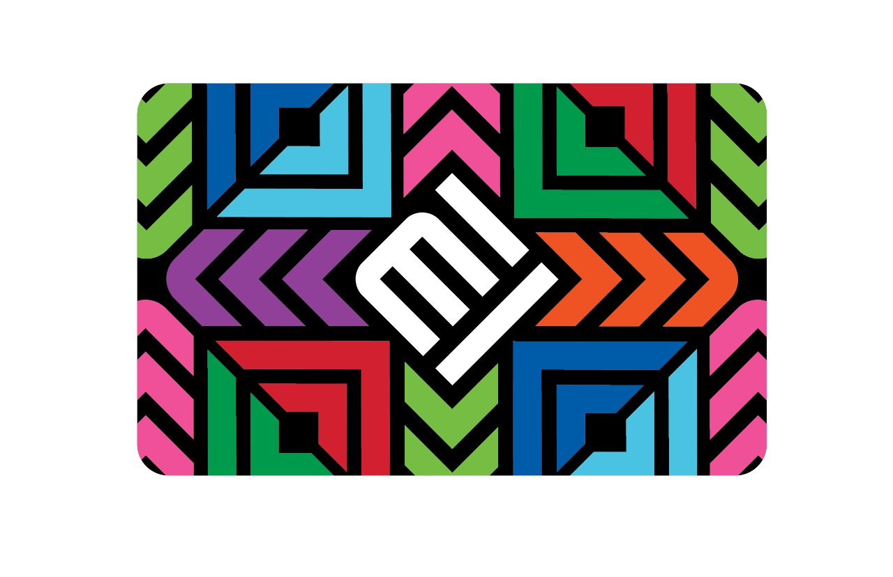

Longitud: 18 Kilómetros con 828 metros.
En servicio 16 Km. 654 m., el resto para maniobras.
Total de estaciones: 20
7 de correspondencia (una es Terminal),
12 de paso y
1 Terminal.
HORARIO
La linea 1 del metro de CDMX está disponible los días laborales de 5:00 a 00:00 horas; los sábados de 6:00 a 00:00 horas; y los domingos y días festivos de 7:00 a 00:00 horas.
¡Tenemos dos opciones para ingresar al STC!

Boleto: Con esta nueva modalidad de pago, actualmente, al igual que el boleto unitario, el costo por viaje es de 3.00 pesos.

Tarjeta: El costo del plástico es de $15 pesos le podrás cargar los viajes que requieras.
¿TE INTERESA MAS DEL METRO?, Pues checa los momentos historicos de la linea 1.